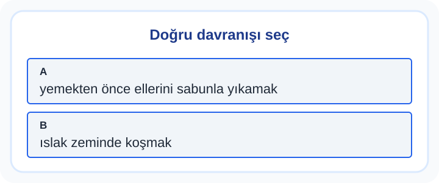

1. Sınıf Hayat Bilgisi Sağlığım ve Güvenliğim Kolay Test 1
Günlük alışkanlıklar ve güvenli davranışlar küçük kararlarla şekillenir. Temizlik, beslenme veya yol güvenliğiyle ilgili durumlarda tehlikeyi fark etmek ve güvenilir yetişkinden yardım istemek önemlidir.
10 soru · Yaklaşık 11 dakika. Bu bir süre sınırı değildir; açıklamaları kendi hızında inceleyebilirsin.
Sağlığım ve Güvenliğim: konu anlatımı ve çözümlü çalışma
Başlamadan önce dikkat et
Tehlikeyi yalnız kendin atlattığında başkaları için de bittiğini sanma.
Bu testten iki çözümlü örnek
1. örneği incele
Mert, ev ortamında yemekten önce ellerini sabunla yıkamak. Bu davranış hangisine örnektir?
- sağlıklı ve güvenli davranmak
- ıslak zeminde koşmak
- kuralları önemsememek
- sorumluluktan kaçmak
Cevap ve gerekçe
sağlıklı ve güvenli davranmak
yemekten önce ellerini sabunla yıkamak, sağlıklı ve güvenli davranmak için uygun bir davranıştır.
2. örneği incele
Görselde Sağlığım ve Güvenliğim konusuyla ilgili iki davranış var. Güvenli ve doğru olan hangisidir?

- yemekten önce ellerini sabunla yıkamak
- ıslak zeminde koşmak
- uyarıları dinlememek
- eşyaları izinsiz almak
Cevap ve gerekçe
yemekten önce ellerini sabunla yıkamak
Doğru seçenek “yemekten önce ellerini sabunla yıkamak” davranışıdır.
Testten sonra kısa çalışma
Evde güvenli biçimde gözleyebileceğin bir risk için kime haber vereceğini belirle.
Yanlışlarını Öğren bölümünde kendi cevabını açıklamayla karşılaştır. Bir sonraki denemede cevabı ezberlemek yerine nedenini anlat. Veliler için sonuçları yorumlama
Soruların hazırlanması ve kontrol sınırları · İçerik hatası bildir
Öğrenme alanı: Sağlığım ve Güvenliğim. Buradaki beceriler çalışma odağını anlatır; resmî MEB öğrenme çıktısı kodları değildir. testcoz.pro, Millî Eğitim Bakanlığı’nın resmî sitesi değildir.
Testleri kayıt olmadan çözebilirsiniz. İsteğe bağlı kayıt, günlük hedef ve öğrenci paneli gibi ek özellikler için sunulur.